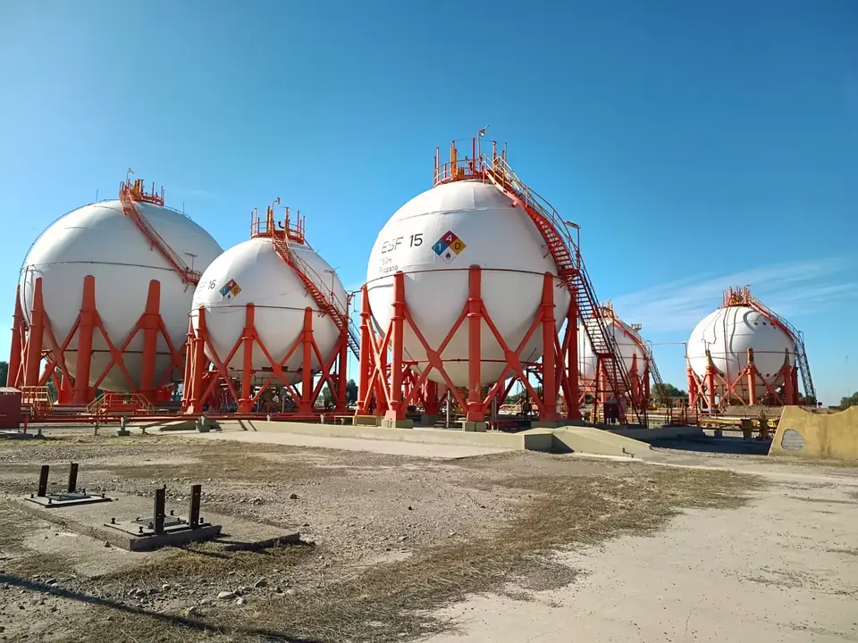
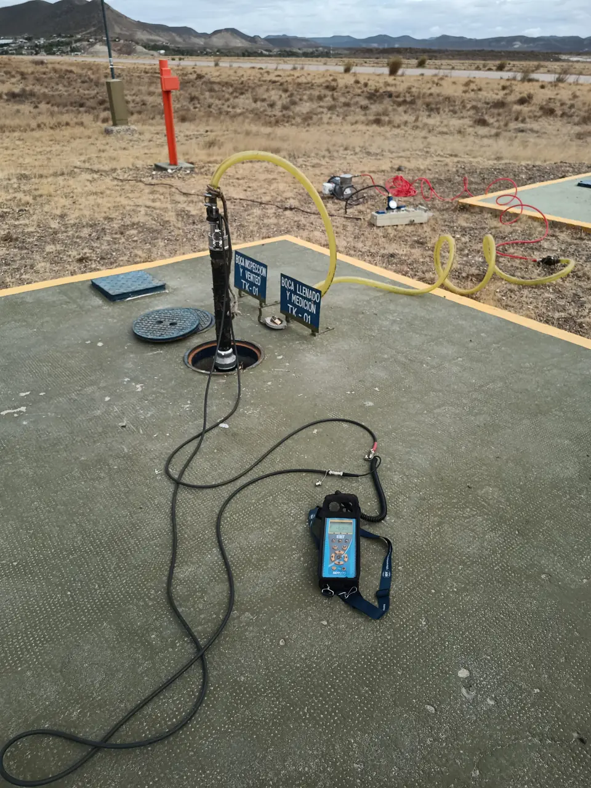

Auditorías de seguridad, habilitación de instalaciones y rehabilitación de equipos de GLP
Auditamos instalaciones de hidrocarburos según la normativa de la Secretaría de Energía.
Inscribimos y habilitamos nuevas instalaciones.
Rehabilitamos equipos de GLP y certificamos su aptitud ante la Secretaría de Energía.
- +15 añosde experiencia
- A1 a C3auditores habilitados (Res. 404/94)
- [PENDIENTE]certificaciones de Veatec

Instalaciones auditadasParque de esferas de GLP · YPF CILC
Servicios ofrecidos para la integridad de sus activos y la seguridad de sus instalaciones

Auditorías de seguridad
Seguridad y funcionamiento de instalaciones bajo la normativa de Secretaría de Energía.
Ver detalle →
Inscripción y habilitación de nuevas instalaciones
Inscripción y habilitación de nuevas instalaciones ante la Secretaría de Energía, según Res. 1102/04 y Res. 419/98.
Ver detalle →
Rehabilitación de equipos almacenadores de GLP
Rehabilitación decenal de esferas, tanques y otros equipos de GLP, con certificación final.
Ver detalle →Empresas que confían en Veatec


Qué gana su operación
Seguridad industrial
Prevención de accidentes e incidentes en instalaciones y equipos críticos.
Mantenimiento optimizado
Decisiones basadas en el estado real del activo y mayor vida útil de los equipos.
Menos paradas imprevistas
Reducción de paradas no planificadas y de los costos asociados.
Cumplimiento normativo
Auditorías según Res. 404/94, habilitaciones según Res. 1102/04 y Res. 419/98, y rehabilitación de equipos de GLP con certificación ante la Secretaría de Energía.
Personal con certificación vigente
- [PENDIENTE]Certificaciones del personal de Veatec (las envía el cliente)
Trabajos en plantas de la industria



Envíe su consulta por equipos o instalaciones
Cuéntenos qué necesita y le respondemos con una propuesta técnica.